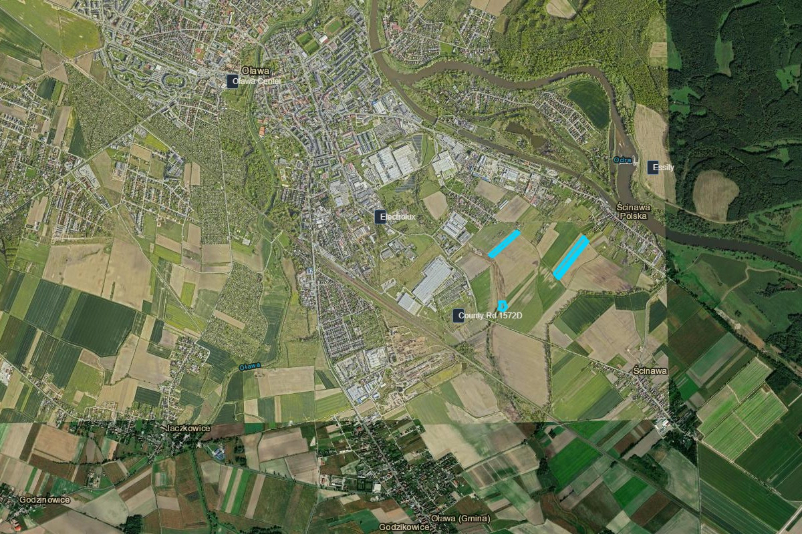

The plots are located in gmina Oława — a growing community of 33,000 people, 25 km from Wrocław with a 15-minute train connection. Affordable housing, a full-service hospital, quality schools, and a 5-star marina on the Odra River. Poland's first railway terminated here in 1842.
Oława is a Piast dynasty town at the confluence of the Odra and Oława rivers, with documented history reaching back to 1149. The town received city rights around 1234 and served as a royal residence — Crown Prince Jakub Sobieski, son of Poland's celebrated warrior-king Jan III Sobieski, ruled from the Oława castle between 1691 and 1737.
In 1842, the locomotive "Silesia" departed Wrocław and arrived in Oława — inaugurating the first railway line on present-day Polish territory. Today, Oława is a thriving industrial community with 33,087 residents, growing 6.3% since 2002, with below-national unemployment at 4.3%.
A 14th-century castle rebuilt in Renaissance and Baroque style by Italian architects Carlo Rossi and Luca Giovani. Houses the Municipal Office. Features an arcaded loggia and Princess Luiza's original coat of arms.
The 58.5-meter Town Hall, renovated by architect Karl Friedrich Schinkel, houses a Baroque astronomical clock (1680–1718) with moving figures of King Solomon, a gilded moon sphere, and hand-forged steel components still working after 300 years.
Poland's largest private automotive museum, opened June 2024 in Oława. 7,000 m² exhibition space with 459+ cars, 100+ motorcycles, 192 bicycles. An additional 5,000 m² expansion is underway.
The original 1842 railway station, designed by architect August Rosenbaum, stands as a monument to Poland's first railroad. The Wrocław–Oława line was built by Sharp, Roberts & Co. of Manchester.
The A4Corridor plots are located in Ścinawa Polska, a village in gmina Oława that shares the 55-200 postal code with the town. The village boundary sits just 0.7–1.0 km from Oława's urban edge — functionally adjacent. Driving to Oława center takes 5 minutes via County Road 1572D.
A 5-star marina on the Odra River, located in Ścinawa Polska itself (address: Ścinawa Polska 38a). Features a premium waterfront restaurant (Tawerna Kapitańska, 4.5/5 on Restaurant Guru from 1,989 reviews), floating apartments, and 24/7 monitoring. Winner of the 2013 "Przyjazny Brzeg" national award. Hosts the annual "Piana Bosmana" river festival since 2010.
A 20,000-hectare Natura 2000 wilderness stretching 70 km along the Odra valley, directly across the river from Ścinawa Polska. 294,000 annual visitors. 113 breeding bird species. Oak-hornbeam forests, meadows, wetlands, and the Odra cycling trail.

Satellite context — A4 Motorway, Oława, Ścinawa Polska
Direct trains every ~30 minutes via PKP Intercity and POLREGIO — 25 daily services. Journey time: 15 minutes to Wrocław Główny. The new Oława Zachodnia station (opened June 2025) provides additional western access. Poland's oldest railway line, operating since 1842.
A4 motorway via Węzeł Brzezimierz — 25 km to Wrocław, direct connections to Opole, Katowice, and Kraków. DK94 national road as secondary route. County Road 1572D provides direct access to the plots. 28 km / ~40 minutes to Wrocław center by car.
Wrocław Copernicus Airport (WRO) — approximately 45 minutes by car. Domestic and international flights to major European hubs support business travel for management and visiting clients.
PKS Oława regional buses, Oławskie Przewozy Gminno-Powiatowe (OPGP) local routes, and FlixBus connection to Wrocław from €3 (~35 min). Most employees live within a 15–30 minute commute of the plots.
Housing costs in Oława are roughly half of Wrocław city center prices. Employees can buy a quality apartment at ~€1,800/m² compared to €2,850–3,330/m² in Wrocław — while being 15 minutes away by train.
| Type | Price / Cost |
|---|---|
| Purchase price (new build) | ~€1,800/m² |
| Average apartment value | ~€81,000 |
| Studio / 1-room rental | €360/month + utilities |
| 2-room apartment rental | €440–570/month + utilities |
Active developer projects include Zielona Daglezja (eco-focused), Osiedle Reńskie, and Nowy Otok Residence — signaling a growing, desirable housing market. Employees who prefer urban living can commute from Wrocław; those seeking space and lower costs live locally.
Oława provides comprehensive education from nursery through secondary level. Ścinawa Polska itself has a primary school (Szkoła Podstawowa w Ścinawie Polskiej). The city's flagship high school, I Liceum Ogólnokształcące im. Jana III Sobieskiego, earned a Silver Shield in the 2026 Perspektywy national ranking.
Vocational training is available through Technikum Nr 1, Technikum Nr 2, and the Centrum Kształcenia Zawodowego i Ustawicznego (CKZiU) — programs tailored to local labor market needs. Public nursery "Zielony Zakątek" offers 96 places with EU-funded free care.
For higher education, Wrocław's 20+ universities — including Wrocław University of Technology, University of Economics, and Medical University — are 15 minutes by train. 130,000+ students and 30,000+ annual graduates form the recruitment pipeline for manufacturing operations.
Zespół Opieki Zdrowotnej w Oławie (County Hospital) at ul. Baczyńskiego 1 provides full-service medical care including emergency department (SOR), general surgery, internal medicine, pediatrics, gynecology & obstetrics (ranked top 4 in Lower Silesia for humane births), neonatology, ENT, ophthalmology, and specialist outpatient clinics.
Additional facilities include NZOZ Intmed (family medicine, pediatrics, ultrasound, EKG), multiple private dental and medical practices, and night/holiday medical care. For advanced tertiary care, Wrocław's university hospitals are accessible within 25–30 minutes.
Oława is a productive industrial town. 64.9% of employment is in industry and construction. Average monthly gross salary in powiat oławski is €1,867 (91% of national average). Unemployment stands at 4.3% — below the national rate of 5.7%.
| Employer | Industry | Detail |
|---|---|---|
| Electrolux Poland | Household appliances | ~1,250 employees, 2M washing machines/year |
| Essity (Tork) | Hygiene products | Swedish multinational, ul. 3 Maja 30A |
| DS Smith | Packaging | 1,300 employees, corrugated packaging |
| Autoliv | Automotive safety | Airbag textile components |
| Mobile Climate Control | HVAC | Swedish, vehicle climate systems |
The presence of multiple Swedish and international manufacturers confirms that the area supports foreign operations effectively — established logistics, experienced workforce, and proven supply chains.
The Odra River runs through the area, with Marina Oława providing premium waterfront dining and river access. The 20,000-hectare Grady Odrzańskie Natura 2000 site across the river offers cycling (Odra Trail), fishing, birdwatching, and forest walks — attracting 294,000 visitors annually.
Termy Jakuba (thermal aquapark) provides year-round recreation. Oława's Market Square, castle park, and riverside promenades offer urban leisure. Wrocław — with its theaters, museums, restaurants, and nightlife — is 25 km away.
The WENA Automotive Museum (459+ cars, 7,000 m² and expanding) puts Oława on the national tourism map. The combination of accessible urban culture, premium river amenities, and protected natural landscapes creates a quality of life that supports employee satisfaction and long-term retention.
Demographics, proximity analysis, housing data, employer profiles, and local amenities.
Request Exposé